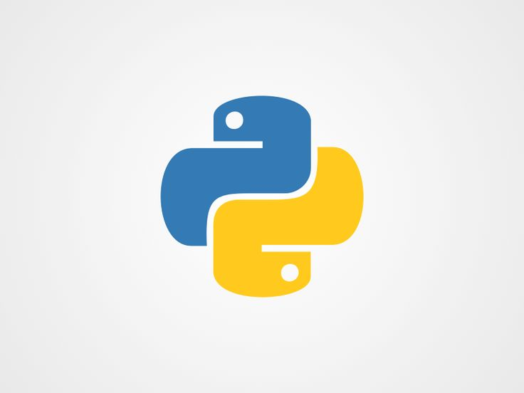
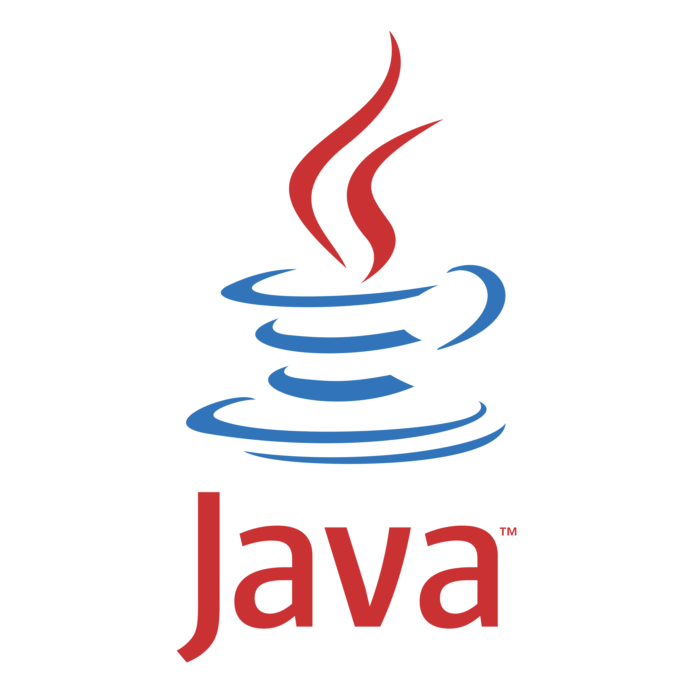

255 The Preserve Drive • Athens, GA • 404-640-9814 • Sebastian_mendez@comcast.net
I am a Computer Science student at the University of Georgia. My professional goals include a career in software development and network security. I have experience in data management and administrative support, and I am known for reliability, adaptability, and a strong work ethic.

